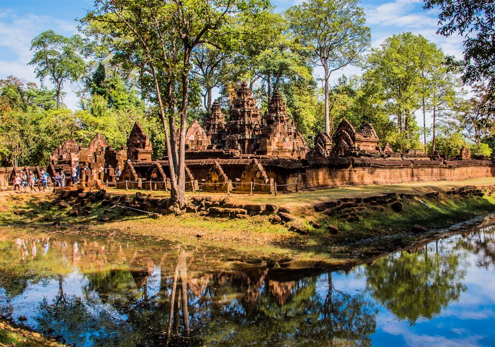
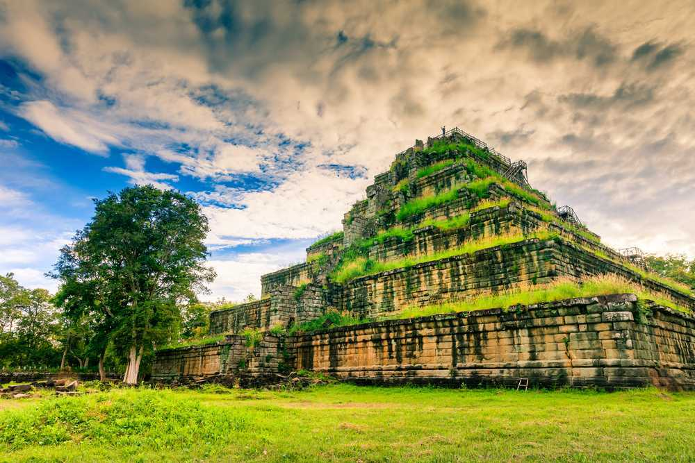

1. Angkor Wat (Angkor Archaeological Park)

This temple city is the number one tourist spot in
Cambodia.
Accessed from the town of Siem Reap, the temples of the Angkorian period are so ambitious in scale and
in the majesty
of their construction, that Angkor Wat is rated as one of the world's must-see ancient sites.Built
between 802 and
1432, this was the largest city in the world during the medieval age and the vast powerhouse of the
Khmer kings
who endeavored to outbid their predecessors in the beauty of their construction.As the city's wooden
dwellings
were encroached and then decayed by the surrounding jungle, what remains today, are just those mighty
temples.
The temple of Angkor Wat itself, the world's largest religious building, is only one sliver of the site
in total,
and the sprawling circuit of temples deserves three days to explore if you want to understand the scope
of the
Angkorian period's architectural achievements.For those short on time though, the main highlights after
Angkor
Wat are the tree-root clasped temple of Ta Prohm (which first found international fame as a location
used in the
movie Tomb Raider), the Bayon Temple for its 216 stone-carved faces, Angkor Thom and Preah Khan.
2. Banteay Srei

Although officially part of the Angkor complex, Banteay
Srei lies 25 km (15 miles) north-east of the main group of temples, and therefore often considered a
separate Cambodia attraction. The temple was completed in 967 AD and is built largely of red sandstone,
a medium that lends itself to the elaborate decorative wall carvings which are still clearly visible
today. Banteay Srei is the only major temple at Angkor not built for a king, instead it was constructed
by one of king Rajendravarman’s counselors, Yajnyavahara.
3. Bayon Temple

Part of the world famous destination of Angkor, the Bayon
temple features a sea of over 200 massive stone faces looking in all direction. The curious smiling
faces, thought by many to be a portrait of king Jayavarman VII himself or a combination of him and
Buddha, are an instantly recognizable image of Angkor. Built in the 12th century by King Jayavarman VII
as part of a massive expansion of his capital Angkor Thom, the Bayon is built at the exact center of the
royal city.
4. Koh Ker

Koh Ker was the capital of the Khmer empire for a very
brief period from the year 928 to 944 AD. In this short time some very spectacular buildings and immense
sculptures were constructed. The site is dominated by Prasat Thom, a 30 meter (98 ft) tall temple
pyramid rising high above the surrounding jungle. A giant Garuda (mythical half-man, half-bird
creature), carved into the stone blocks, still guard the very top, although its partially covered now.
Left to the jungle for nearly a millennium, Koh Ker was one of Cambodia’s most remote and inaccessible
temple destinations. This has now changed thanks to recent de-mining and the opening of a new toll road.
5. Preah Vihear

Preah Vihear is a Khmer temple situated atop a 525 meter
(1,722 ft) cliff in the Dângrêk Mountains, on the border between Cambodia and Thailand. It has the most
spectacular setting of all the Khmer temples. Most of the temple was constructed in the 11th and 12th
century during the reigns of the Khmer kings Suryavarman I and Suryavarman II. It was dedicated to the
Hindu god Shiva. Preah Vihear is the subject of a long-running territorial dispute between Thailand and
Cambodia, and several soldiers were killed in clashes in 2009.
.png)